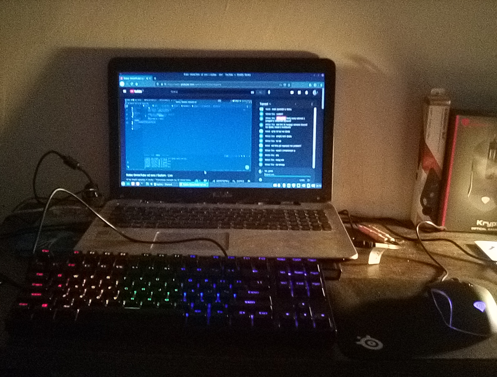
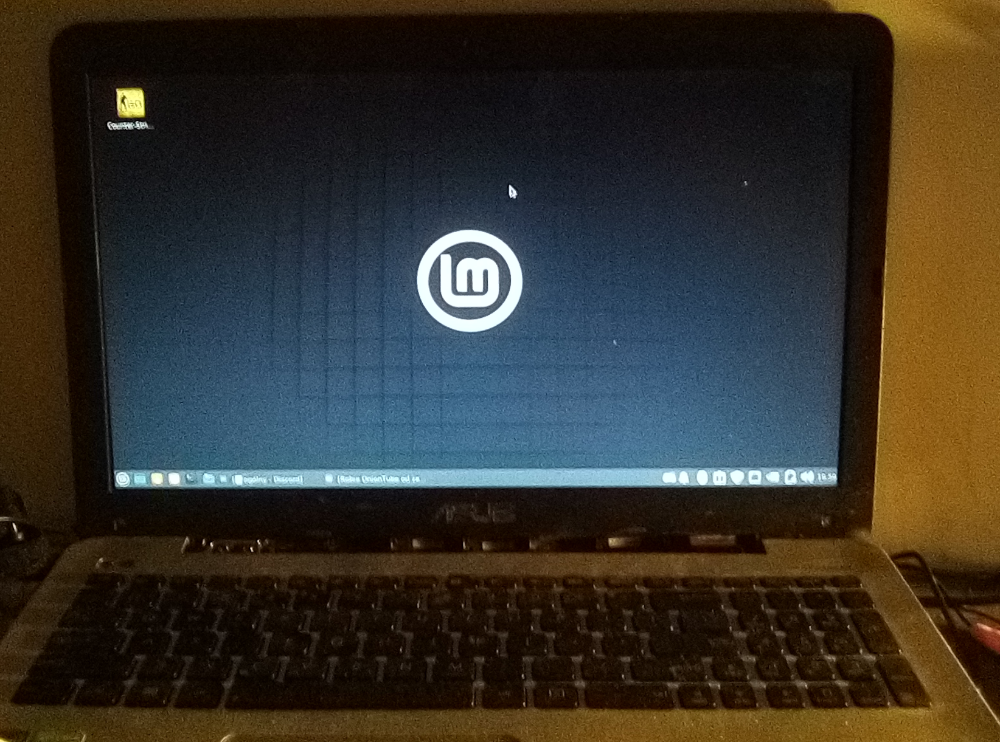
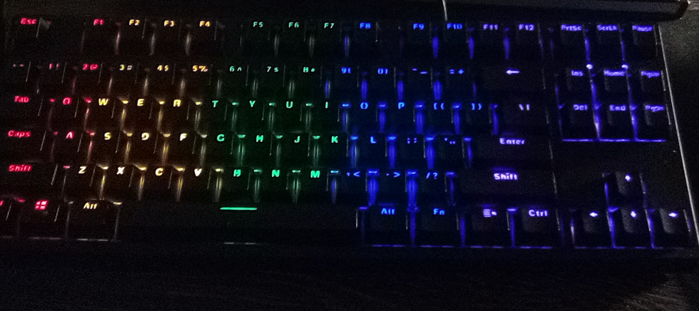
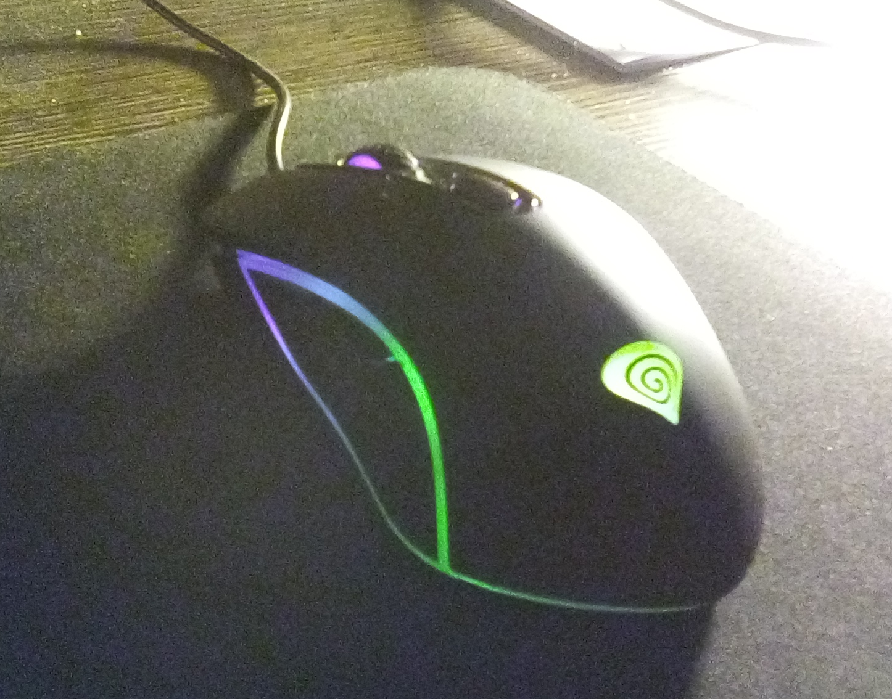
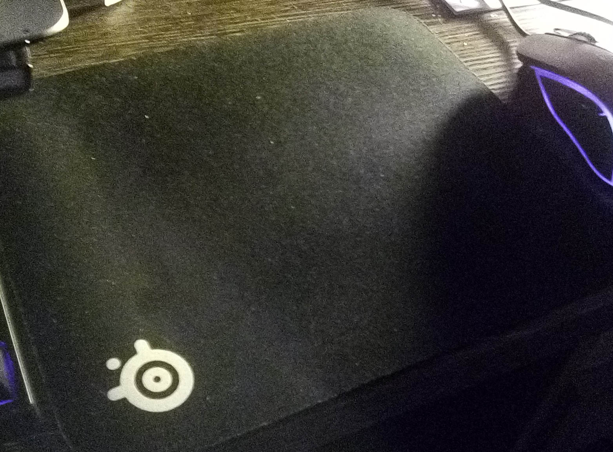

O mnie!
Mam na imię Bartosz uwielbiam programować i robić w blenderze modele a moje hobby to kolarstwo górskie
Moje stanowisko!

Laptop
Laptop jest z 2014r (o ile się nie myle) ma intela i3-4030U 2 rdzeniowy i 4 wątkowy 1.80ghz
a karta graficzna to nvidia geforce 820m 2 gb vramu a sam laptop ma 3 gb ramu

Klawiatura
Klawiatrua od kruxa a dokładnie Krux atax rgb tkl outemu blue troche są głosne
i mogłem wybrać czerwone albo brązowe ale trudno się mówi

Myszka
Gensis krypton150 sensor optyczny 5311, dpi 800-2400, raportowanie 500hz i waga 98g
to są najważniejsze informacje które powwinem tutaj zamieścić myszka git jak do 50zł
ale sensor mogł być lepszy :/ ale ja nie jestem zbyt wymagającym graczem a rgb tutaj
jest udawane

Podkładka
Bardzo przywoita podkładka od steelseries qck rozmiar small oczywiśćie szmaciana
i bez obszycia nadaje sie na sensory optyczne i laserowe
